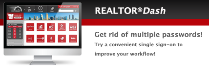

Created exclusively for SDAR, this new dashboard offers members a streamlined apparatus for managing daily real estate operations. Conveniently located on SDAR.com, REALTOR®DASH summarizes access to all the online tools and data you use every day, in one, easy-to-read location. And, with recent enhancements, REALTOR®DASH now offers members the convenience of single sign-on!
Our single sign-on feature utilizes your MLS Tempo/Fusion log-in credentials, so eliminate multiple passwords, and get connected to all your real estate tools and links with one log-in at SDAR.com/realtordash.
Designed to improve your productivity, the dashboard updates in real-time and is customizable. Add as many or as little widgets of your choice to personalize your REALTOR®DASH. Examples of widgets available include:
See the REALTOR®DASH in action.